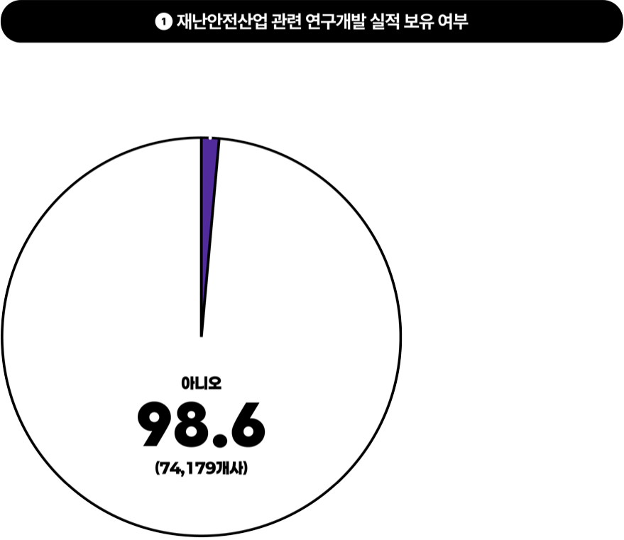
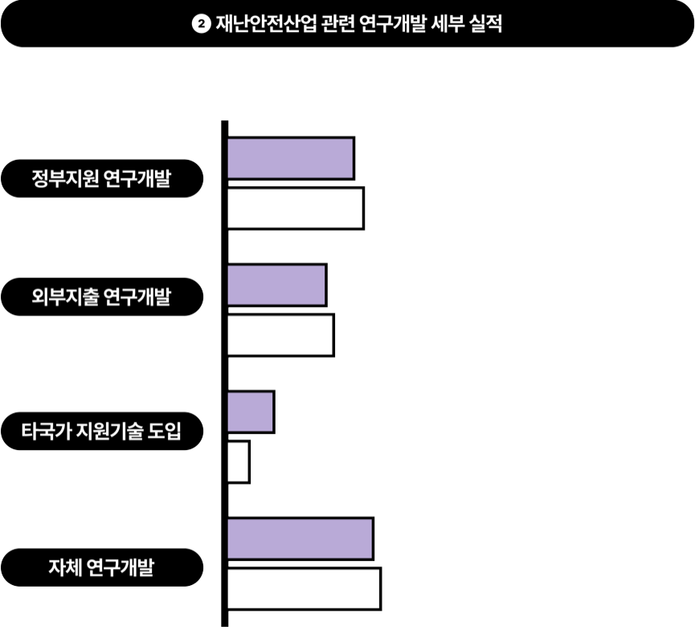
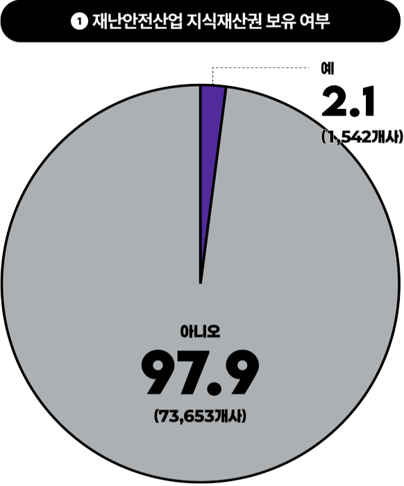
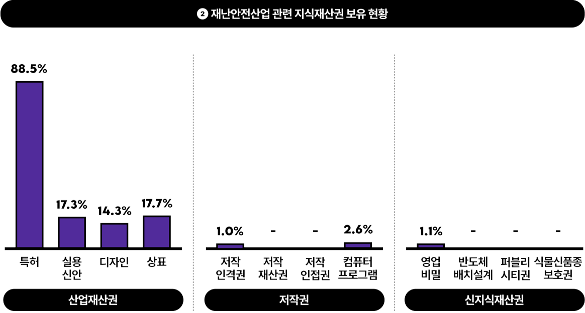
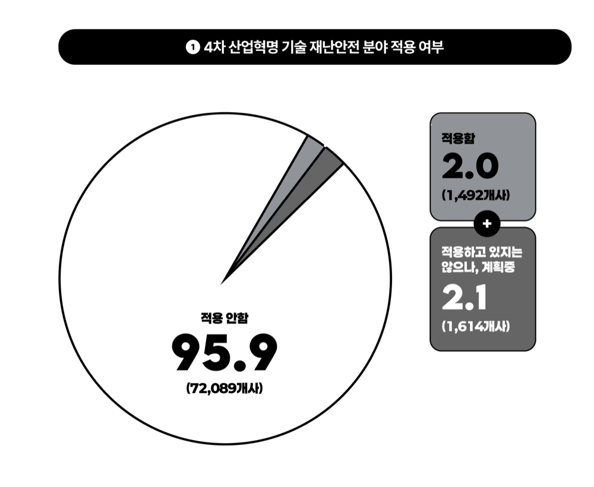
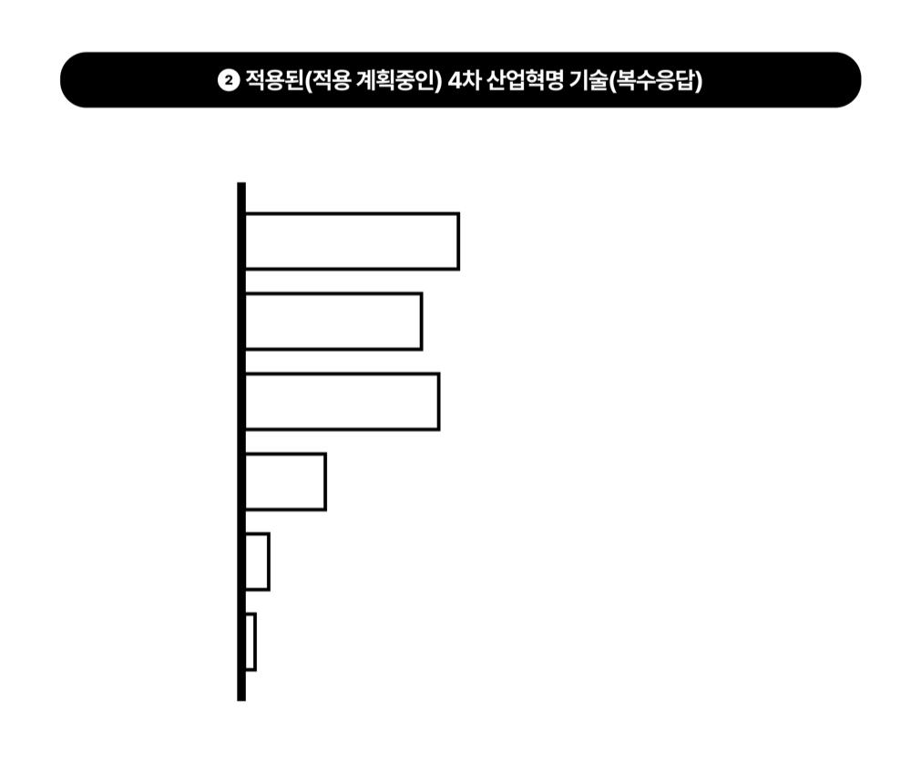
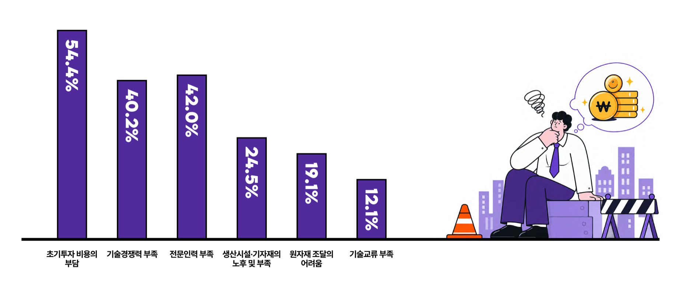

세이프티 INFO
백 곳 중 한 곳만 ‘연구개발’…
AI·IoT·빅데이터 활용도 높아
초기 투자비용과 기술경쟁력·전문인력 부족
재난안전산업의 미래는 기술 경쟁력에 달려 있다. 하지만 현장의 연구개발 참여는 아직 낮은 수준에 머물러 있다. 2025년(2024년 기준) 재난안전산업 실태조사에 따르면 재난안전산업 관련 사업체 중 연구개발 실적을 보유한 곳은 100곳 중 1곳 남짓이다. 지식재산권과 4차 산업혁명 기술 도입 역시 비슷한 수준이다. 이번 호에서는 연구개발 현황과 지식재산권, 신기술 도입 실태, 그리고 기업들이 겪는 애로사항까지 통계로 살펴본다.
01재난안전산업 연구개발 현황
전체 사업체 7만 5,195개사 중 재난안전산업 관련 연구개발 실적을 보유한 곳은 1,016개사, 비율로는 1.4%에 그친다. 연구개발 실적이 있는 사업체의 연구개발 실적 총액은 3,394억 원(2,478건)이다. 이중 ‘자체 연구개발’ 실적이 2,190억 원(1,672건)으로 가장 큰 비중을 차지한다.


02재난안전산업
지식재산권 현황
전체 사업체 중 재난안전산업 관련 지식재산권을 보유한 곳은 100곳 중 2곳 정도였다.(1,542개사, 2.1%)다. 지식재산권을 보유한 사업체의 지식재산권 종류로는 산업재산권 중 ‘특허’가 88.5%로 가장 많고, ‘상표’(17.7%), ‘실용신안’(17.3%), ‘디자인’(14.3%) 이 뒤를 잇는다. 저작권 및 신지식재산권 종류에서는 ‘컴퓨터 프로그램’(2.6%), ‘영업 비밀’(1.1%), ‘저작인격권’(1.0%) 순으로 높게 나타났다.


034차 산업혁명 기술
도입 현황
전체 사업체의 4.1%(3,106개사)는 4차 산업혁명 관련 기술을 재난안전 분야에 적용 또는 계획 중인 것으로 조사됐다. 4차 산업혁명 기술을 적용(또는 계획중인)한 사업체는 ‘인공지능(AI)’(41.3%) 분야를 가장 많이 활용하고 있었다. ‘사물인터넷(IoT)’(37.6%), ‘빅데이터 분석’(33.9%)도 활용도가 높은 기술로 꼽힌다.


04기술개발 분야에서의
애로사항
재난안전산업 관련 기술개발 분야에서의 가장 큰 애로사항은 ‘초기투자 비용의 부담’(1+2순위 54.4%)으로 나타났다. 이어서 ‘기술경쟁력 부족’(10.2%), ‘전문인력 부족’(42.0%), ‘생산시설 및 연구기자재의 노후 및 부족’(24.5%) 등의 순으로 높게 조사됐다.

K-SAFETY INSIGHT
초기 연구개발 비용 낮춰야 기술력 ‘승부’ 가능
재난안전산업에서 연구개발 실적과 지식재산권을 보유한 기업은 여전히 소수다. 사업체 100곳 중 연구개발 실적이 있는 곳은 1곳, 지식재산권을 가진 곳도 2곳에 그친다. 그중 4차 산업혁명 기술을 도입하거나 계획 중인 기업은 조금 늘어난 4곳 수준이며, 그 중심에는 인공지능이 있다. 하지만 정작 기업들은 연구개발에 나서고 싶어도 초기투자 비용의 부담 앞에서 주춤한다. 응답 기업의 절반 이상이 이를 가장 큰 걸림돌로 꼽았다. 앞으로 재난안전산업이 기술력으로 승부하려면, 초기 연구개발 비용을 낮추는 정책적 지원과 함께 지식재산권 확보를 유도하는 기반이 함께 마련돼야 한다.